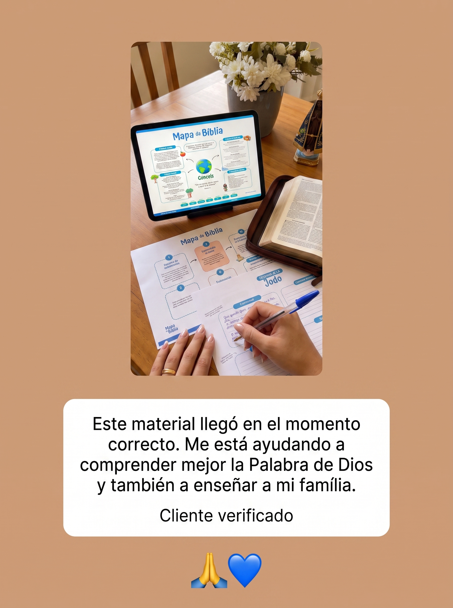
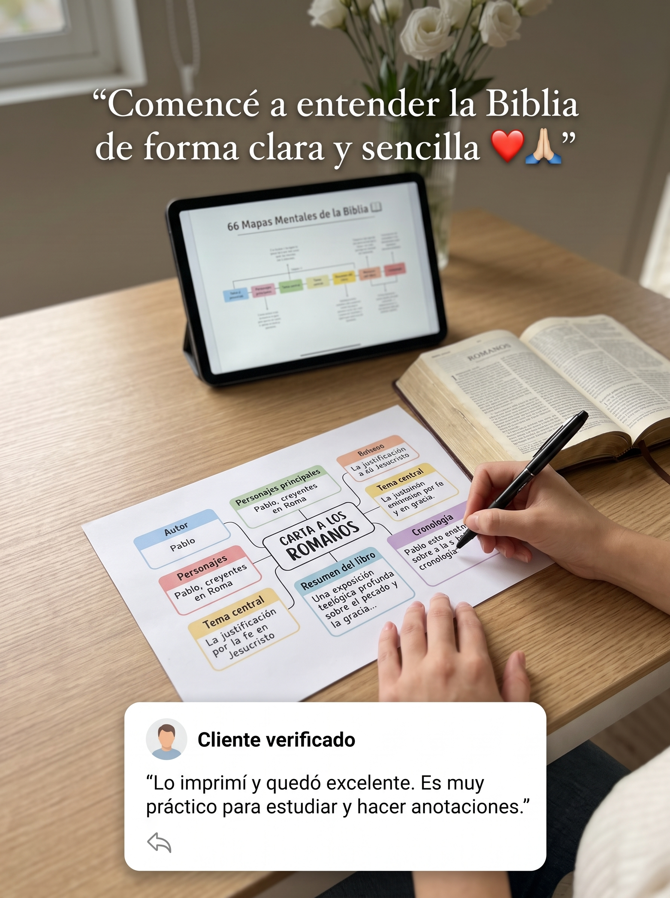
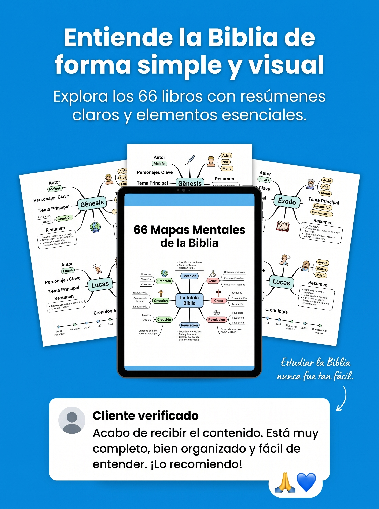
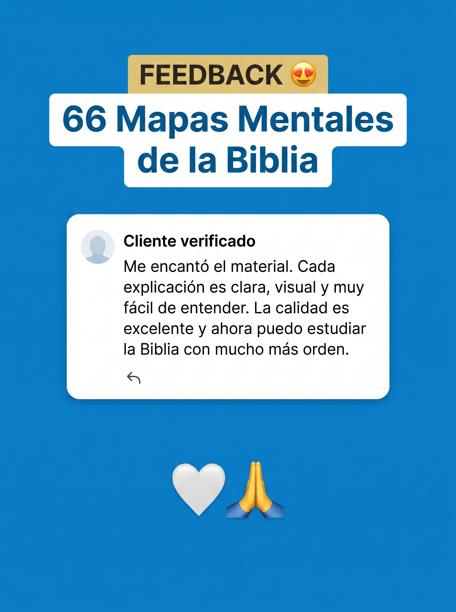
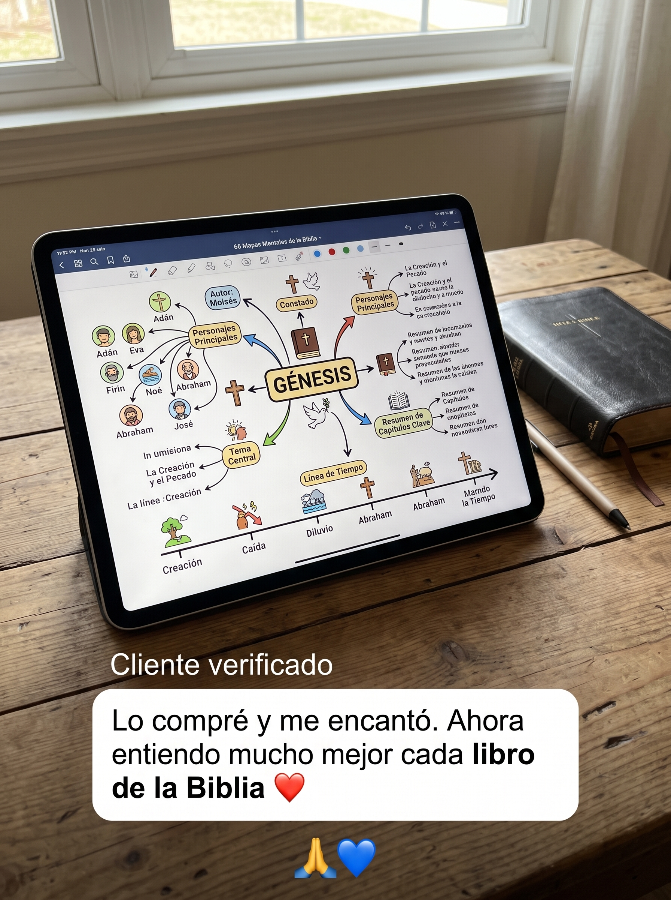
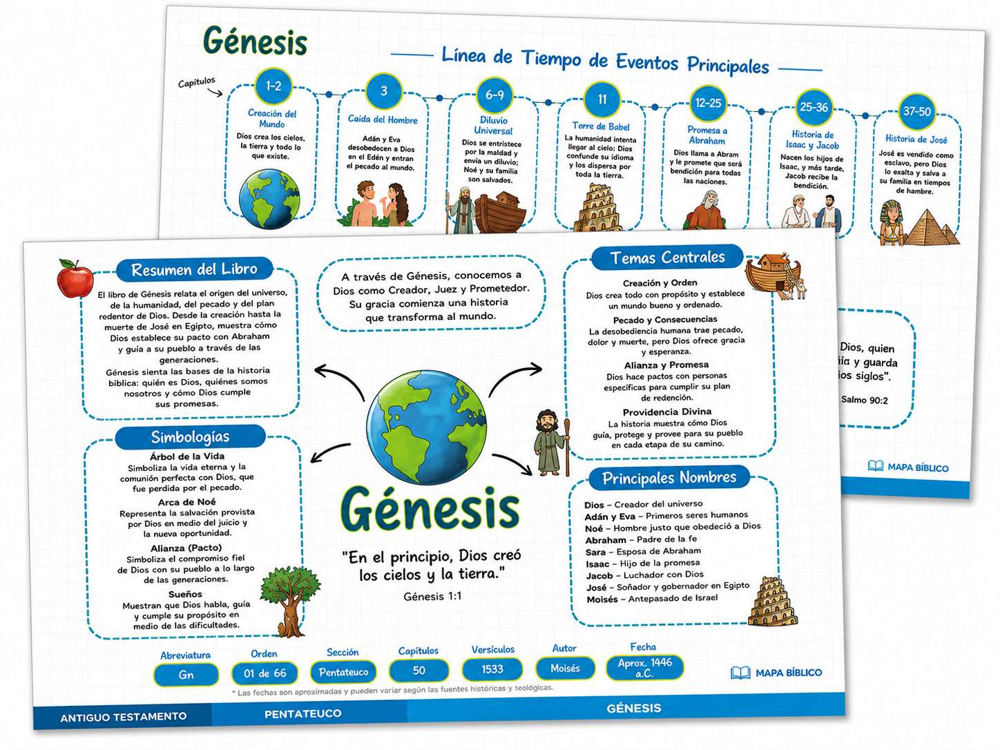
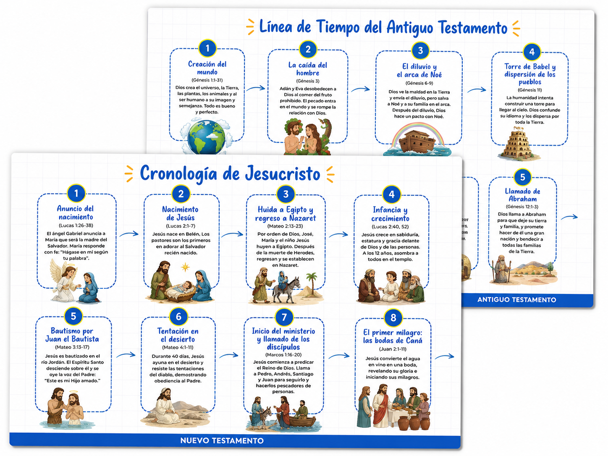
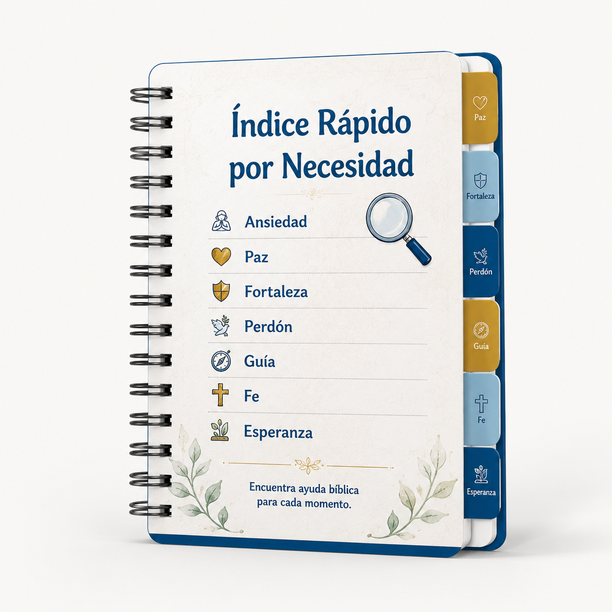
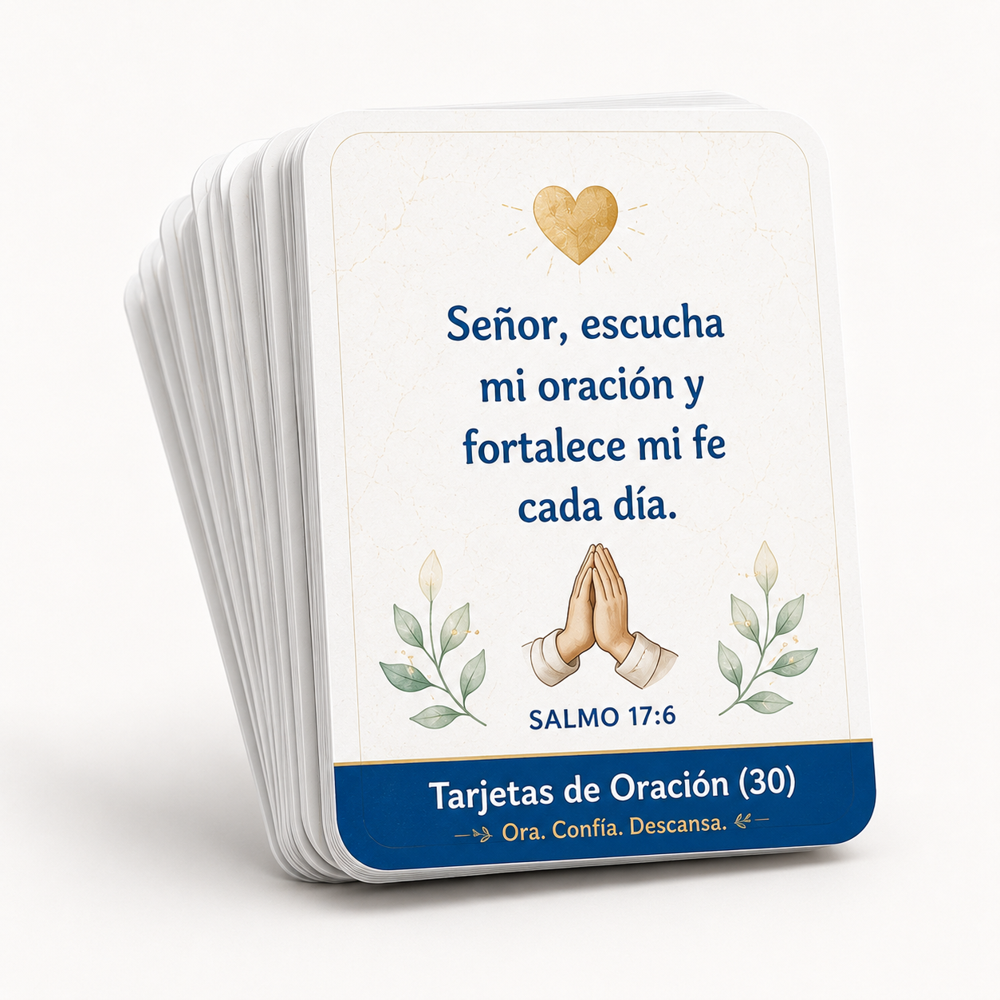
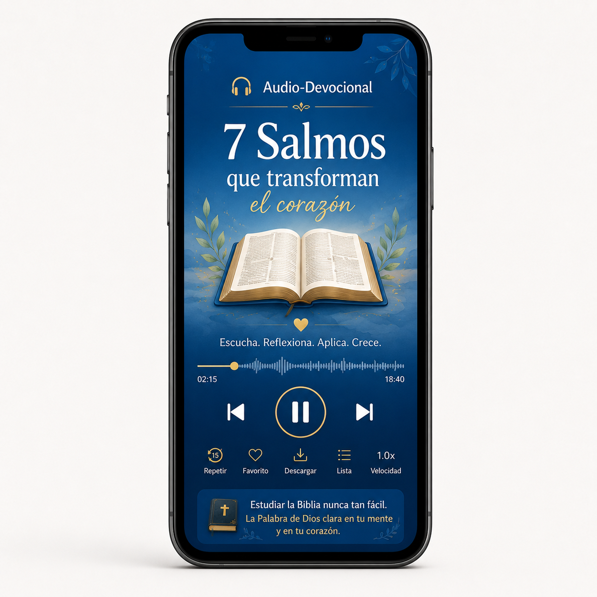

7 Días de Garantía
Confiamos tanto en la calidad de nuestro material que ofrecemos garantía incondicional. Si no quedas satisfecha, devolvemos el 100% de tu dinero dentro de este plazo.
Una manera fácil, pensada para que cualquier persona aprenda la Palabra de Dios sin sentirse perdida.
El Mapa Visual de la Biblia es increíble, y quienes ya lo están usando coinciden con esto.





Video de presentación
Espacio reservado para la VSL — reemplazar cuando esté grabada.
El Mapa Visual de la Biblia son resúmenes visuales de la Biblia, pensados para acompañarte a explorar y comprender la Palabra de Dios en su totalidad — simplificando la riqueza de las enseñanzas de cada libro sagrado.
Con el Mapa Visual, vas a poder dedicarte al estudio diario de la Biblia con entusiasmo, equipada con una guía eficaz para navegar las Escrituras y sus múltiples dimensiones.
Esta es la mejor forma de mejorar tu conocimiento bíblico, estudiando con confianza y viviendo una transformación espiritual profunda al sumergirte en las enseñanzas de cada libro.

Explora cada uno de los 66 libros de la Biblia de forma clara y estructurada, con resúmenes y elementos esenciales que facilitan el entendimiento de la Palabra de Dios.

Comprende la secuencia de los principales acontecimientos bíblicos en orden cronológico, facilitando el entendimiento de la historia de la salvación.
"Antes, me sentía perdido al intentar entender ciertos libros de la Biblia. El Mapa me dio una visión panorámica que marcó toda la diferencia."
"Entender el contexto de cada libro me ayudó a aplicar las enseñanzas de la Biblia en mi vida. Estoy muy agradecida por este material."
"¡El Mapa de la Biblia transformó mi estudio bíblico! Ahora puedo entender los contextos, las conexiones y el mensaje de cada libro."

Entiende cómo está organizada la Biblia y a qué libro acudir según lo que estés viviendo, para que sea también una herramienta práctica en tu día a día.
Plan de lectura con metas día a día, pensado para incentivarte a profundizar tu estudio bíblico incluso si tienes poco tiempo.
Un espacio dedicado a registrar aprendizajes, reflexiones e ideas, ayudando a aplicar las enseñanzas bíblicas en tu día a día.

30 tarjetas con oraciones cortas para cada momento del día, listas para imprimir.

Guion narrado para acompañar 7 salmos de consuelo en momentos difíciles.
Una selección de versículos clave, lista para guardar en tu corazón y consultar cuando la necesites.
15 fondos de pantalla con versículos, listos para tu celular.
Javier Morales
Siempre quise estudiar la Biblia con más profundidad, pero no sabía por dónde empezar. Con estos mapas, todo quedó mucho más claro y organizado.
Diego Fernández
Me sorprendió lo fácil que es identificar los personajes, los acontecimientos y el propósito de cada libro. Es un material muy práctico para estudiar.
Sofía Martínez
Ahora puedo comprender mejor cómo se relacionan los libros de la Biblia. El contenido es visual, sencillo y realmente fácil de consultar.
Ricardo Salazar
Antes leía algunos pasajes sin entender completamente el contexto. Este material me ayudó a conectar las historias y comprender mejor el mensaje bíblico.
Valentina Herrera
Los mapas hicieron que mi tiempo de estudio fuera más organizado y agradable. Los utilizo para aprender, tomar notas y recordar los puntos más importantes.
Más de 10 recursos exclusivos, de Génesis a Apocalipsis.
pago único
pago único
Compra 100% segura · Garantía de 7 días
Confiamos tanto en la calidad de nuestro material que ofrecemos garantía incondicional. Si no quedas satisfecha, devolvemos el 100% de tu dinero dentro de este plazo.
Sí, es una guía completa que abarca los 66 libros, tanto del Antiguo como del Nuevo Testamento.
Por ahora ofrecemos únicamente la versión digital, con acceso inmediato desde tu celular, tablet o computadora.
El acceso llega a tu correo electrónico inmediatamente después de la confirmación del pago.
El Mapa Visual está diseñado para ofrecerte una perspectiva única y visual, pero no sustituye la riqueza y autenticidad de las Escrituras. Es una guía que te acompaña, pensada para que quieras profundizar aún más en la fuente original.
Es para ambos. El contenido se enfoca en el contexto histórico y el mensaje central de cada libro, sin depender de una tradición doctrinal específica.